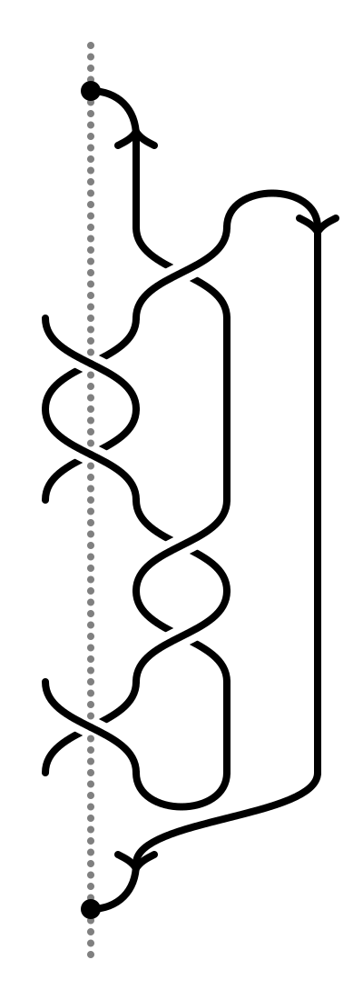

show all invariants|show all metadata
Input data and context

% s.r2.y1.x0.x0.y1.y1.x0.u1
s.r2.y1.x0.x0.y1.y1.x0.u1
,1
% Simplifies with options '-qs' to r1.x0.r1.y2.x1.x0.x0.x1.x1.x0.l2.x3.y1.l2.x3.y2.y1.x4.y3.y2.x0.x1.y2.u1.y1.u0.x0.y2.u1.x0.x0.x0.x0.x0.x0.x0.x0.x0.x0.y1.y0.x1.x1
Bar-Natan multicurve \(\mathrm{\widetilde{BN}}(T)\)
options -c2-qs
(diagram)
(metadata)
% file 'examples/words/w522d1bba0263/cxBNr-c2-qs', generated by kht++ 0.1 on Mon Nov 16 17:44:46 2026 UTC
1) h^ -7 q^-42 δ^ -14 ⬮~~S~>⬯—>⬯~>⬯—>⬯~>⬮—>⬮<~⬯<—⬯<~⬯<—⬯<~⬮<—
2) h^-11 q^-48 δ^ -13 ⬮~~S~>⬯—>⬯~>⬯—>⬯~>⬮—>⬮<~⬯<—⬯<~⬯<—⬯<~⬮<—
3) h^-10 q^-46 δ^ -13 ⬮~~S~>⬯—>⬯~>⬯—>⬯~>⬮—>⬮<~⬯<—⬯<~⬯<—⬯<~⬮<—
4) h^-15 q^-54 δ^ -12 ⬮~~S~>⬯—>⬯~>⬯—>⬯~>⬮—>⬮<~⬯<—⬯<~⬯<—⬯<~⬮<—
5) h^-14 q^-52 δ^ -12 ⬮~~S~>⬯—>⬯~>⬯—>⬯~>⬮—>⬮<~⬯<—⬯<~⬯<—⬯<~⬮<—
6) h^-24 q^-71 δ^-23/2 ⬯——D—>⬯~>⬯—>⬯~>⬯—>⬯~>⬯—>⬯~>⬯—>⬯~>⬯—>⬯~>⬮<—⬮~>⬯—>⬯~>⬯—>⬯~>⬮<—⬮~>⬯—>⬯~>⬯—>⬯~>⬮<—⬮~>⬯—>⬯~>⬯—>⬯~>⬮
Khovanov multicurve \(\mathrm{\widetilde{Kh}}(T)\)
options -c2-qs
(diagram)
(metadata)
% file 'examples/words/w522d1bba0263/cxKhr-c2-qs', generated by kht++ 0.1 on Mon Nov 16 17:44:46 2026 UTC
1) h^ -8 q^-43 δ^-27/2 ⬮~~S~>⬯—>⬯~>⬯—>⬯~>⬮—>⬮<~⬯<—⬯<~⬯<—⬯<~⬮<— s4(∞) q^-38 δ_^-14
2) h^ -7 q^-41 δ^-27/2 ⬮~~S~>⬯—>⬯~>⬯—>⬯~>⬮—>⬮<~⬯<—⬯<~⬯<—⬯<~⬮<— s4(∞) q^-36 δ_^-14
3) h^ -6 q^-39 δ^-27/2 ⬮~~S~>⬯—>⬯~>⬯—>⬯~>⬮—>⬮<~⬯<—⬯<~⬯<—⬯<~⬮<— s4(∞) q^-34 δ_^-14
4) h^-12 q^-49 δ^-25/2 ⬮~~S~>⬯—>⬯~>⬯—>⬯~>⬮—>⬮<~⬯<—⬯<~⬯<—⬯<~⬮<— s4(∞) q^-44 δ_^-13
5) h^-11 q^-47 δ^-25/2 ⬮~~S~>⬯—>⬯~>⬯—>⬯~>⬮—>⬮<~⬯<—⬯<~⬯<—⬯<~⬮<— s4(∞) q^-42 δ_^-13
6) h^-11 q^-47 δ^-25/2 ⬮~~S~>⬯—>⬯~>⬯—>⬯~>⬮—>⬮<~⬯<—⬯<~⬯<—⬯<~⬮<— s4(∞) q^-42 δ_^-13
7) h^-10 q^-45 δ^-25/2 ⬮~~S~>⬯—>⬯~>⬯—>⬯~>⬮—>⬮<~⬯<—⬯<~⬯<—⬯<~⬮<— s4(∞) q^-40 δ_^-13
8) h^-10 q^-45 δ^-25/2 ⬮~~S~>⬯—>⬯~>⬯—>⬯~>⬮—>⬮<~⬯<—⬯<~⬯<—⬯<~⬮<— s4(∞) q^-40 δ_^-13
9) h^-16 q^-55 δ^-23/2 ⬮~~S~>⬯—>⬯~>⬯—>⬯~>⬮—>⬮<~⬯<—⬯<~⬯<—⬯<~⬮<— s4(∞) q^-50 δ_^-12
10) h^-15 q^-53 δ^-23/2 ⬮~~S~>⬯—>⬯~>⬯—>⬯~>⬮—>⬮<~⬯<—⬯<~⬯<—⬯<~⬮<— s4(∞) q^-48 δ_^-12
11) h^-15 q^-53 δ^-23/2 ⬮~~S~>⬯—>⬯~>⬯—>⬯~>⬮—>⬮<~⬯<—⬯<~⬯<—⬯<~⬮<— s4(∞) q^-48 δ_^-12
12) h^-14 q^-51 δ^-23/2 ⬮~~S~>⬯—>⬯~>⬯—>⬯~>⬮—>⬮<~⬯<—⬯<~⬯<—⬯<~⬮<— s4(∞) q^-46 δ_^-12
13) h^-14 q^-51 δ^-23/2 ⬮~~S~>⬯—>⬯~>⬯—>⬯~>⬮—>⬮<~⬯<—⬯<~⬯<—⬯<~⬮<— s4(∞) q^-46 δ_^-12
14) h^-25 q^-72 δ^ -11 ⬯~~S^2~>⬯—>⬯~>⬯—>⬯~>⬯—>⬯~>⬯—>⬯~>⬯—>⬯~>⬯—>⬯~>⬮<—⬮<~⬯<—⬯<~⬯<—⬯<~⬯<—⬯<~⬯<—⬯<~⬯<—⬯<~⬯<— r(12) q^-768/13 δ|^-23/2